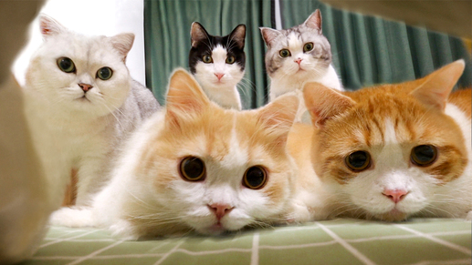
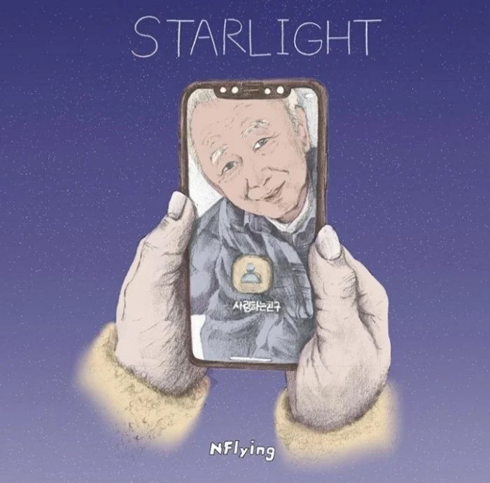

aboutme
大家好 我是從都出生到現在都生活在高雄這個城市的陳雨婷 家人雖然都三不五時經常吵架 但也還是算個和睦的家庭 在大家都還不太熟的情況下 可能會覺得我都不說話很安靜 但是其實只不熟放不開 其實也是很吵話很多的 而我也是屬於比較慎慎的人 像有時候人家跟我講話 看我好像在發呆 但其實不是啦!!只是會在腦中想各種話說出來的會有什麼反應 我想我就是算那種不善於表達的人吧
歡迎來到我的個人網站 這裡將介紹關於我自己的事情
Welcome to my personal website, where I'm going to tell you about myself.
大家好 我是從都出生到現在都生活在高雄這個城市的陳雨婷 家人雖然都三不五時經常吵架 但也還是算個和睦的家庭 在大家都還不太熟的情況下 可能會覺得我都不說話很安靜 但是其實只不熟放不開 其實也是很吵話很多的 而我也是屬於比較慎慎的人 像有時候人家跟我講話 看我好像在發呆 但其實不是啦!!只是會在腦中想各種話說出來的會有什麼反應 我想我就是算那種不善於表達的人吧
我現在從事的工作是關於資料輸入相關的 簡單來說就是處理人壽保險的"新契約"和人壽保險的"理賠"的資料建檔 工作性質就是單純的坐在辦公室敲敲鍵盤打打字 一整天下來都是坐著盯著電腦螢幕8個小時
工作環境也都蠻安靜的 大家都是專注於在自己的件上 所以幾乎都不會交流 只有遇到些比較困難的件時 會詢問看要怎麼處理 但其實說環境安靜 但其實也並不安靜 因為大家都在敲鍵盤 所以整個空間都是鍵盤噠噠噠噠的聲音 幾乎都是不中斷的
然後因為是資料登打的工作 所以正職也都會要求正確率要95%以上 件數也都要在100以上 所以在件數和正確率的壓力就會比較大一點 但這也就是要挑戰自己 雖然我現在還沒有達到那個要求 但是也要把提高件數和提高正確率當作目前的目標
我的興趣就是上網看看歐爸 看看別人養的貓貓狗狗 看看小說 玩玩音遊這樣而已
雖然看起來好像很少事情做 但是因為追星就有太多東西可以追了 時間也都不太夠了 像是新歌MV 新歌舞台 合作舞台 新專Showcase 追直播 看個人直播 看團體直播 直播追完後還要在補中字 還有歐爸上的綜藝節目 和歐爸上的電台
而我也不是只追一團而已 所以有太多東西要追了 扣掉上課時間、工作時間以及做報告的時間之後都沒什麼時間可以好好的追星了
안녕하세요.
我是個從國小五年級就被同學帶進韓圈坑的11年資歷泡菜粉絲 從當年開始就一直關注韓國文化從 音樂、戲劇、電影、服飾以及飲食都有關注 而其中最關注的當然就是音樂 就是偶像歌手這一方面了
追星 有些人特別不理解追星這一個行為 但我感覺有一個很喜歡的偶像是件幸福的事情 追星對於我來說就是有時候心情不好的時候 聽聽他們的音樂心情也會變好起來 覺得累想要放鬆的時候 就去看一下他們的綜藝 笑一笑就有種充電的感覺 有時候做報告讀書的時候也會 就算平時無聊的時候看看他們也就會心情好
看到他們努力進步 也會想跟他們一樣 會想要一起成長 讓自己去努力跟他們一樣優秀
追星不會變壞 只會變窮而已
只有沒聽過這首歌的人 但沒有只聽一遍的人。 N.Flying - Rooftop 屋塔房
之前就有聽說過〈屋塔房〉這首歌逆襲榜單 出於好奇之下也去找來聽了 聽了之後發現不得了 除了被主唱賴的音色直接擊中 旋律很棒以外 歌詞也是非常美 個人非常喜歡星空相關的題材!!
點這裡聽N.FLYING 屋塔房!!!有中文字幕 N.Flying隊長李承協 為過世的爺爺寫的一首歌。 N.Flying - Starlight
隊長說寫出〈Starlight〉這首歌的契機 是因為奶奶的Kakao頭貼是爺爺的照片 個人狀態上寫著“永遠的朋友” 因此才得到靈感的 而歌詞以奶奶的立場貼切地呈現了思念和不捨 歌詞中比起轟轟烈烈的愛情 更像是在敘說爺爺和奶奶是陪伴一輩子的老朋友 MV的部分 我覺得是呼應了歌詞“即使討厭那個變成孩子的你” 真的是太貼近我們的現實生活了 **Kaoko像台灣的Line
點這裡聽N.FLYING Starlight!!!有中文字幕